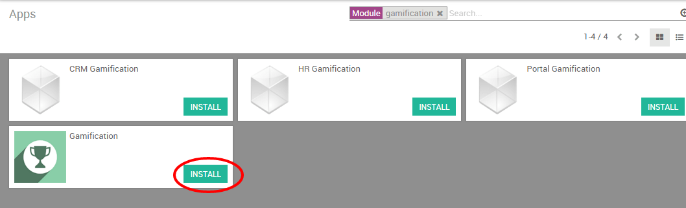

Можно мотивировать ваших сотрудников к достижения конкретных целей с помощью проведения соревнований с целями и наградами - хороший способ наработки полезных для компании привычек, которые повысят производительность ваших продавцов. Приложение Gamification от Odoo дает вам простой набор творческих инструментов для формирования мотивации и оценки ваших сотрудников, в реальном времени и значками, вдохновленными наподобие достижений (ачивок) в компьютерных играх.
Настройка
В меню Apps найдите и установите модуль Gamification. Вы также можете установить приложение CRM gamification, которое добавит некоторые полезные данные (цели и задачи), которые могут быть использованы в модуле CRM/Sale.
Создать соревнование
Теперь вы сможете создать первое соревнование из меню .
Примечание
Поскольку инструмент гемификации является одноразовой технической настройкой, вам необходимо активировать технические функции, чтобы получить доступ к этим настройкам. Перейдите в глобальные настройки, и нажмите на About, а затем Активировать режим разработчика.

Соревнование - это задание, которое вы отправите своим продавцам. Оно может включать одну или несколько целей и настроено на определенный период времени. Настройте свое соревнование следующим образом:
Выберите продавцов, для участия в соревновании
Назначьте ответственного
Укажите даты начала и завершения соревнования
Выберите цели
Настройте награды (значки)
Примечание
Значки выдаются, когда соревнование завершено. Это либо в конце периода выполнения (например: конец месяца для ежемесячного соревнования), либо на дату окончания вызова (если не задана периодичность), либо когда соревнование закрыто вручную.
Например, на скриншоте ниже я добавил в соревнование 2 сотрудников с месячной целью продаж. Задача будет основываться на 2 целях: общая сумма выставленных счетов и количество новых потенциальных клиентов. В конце месяца победителю будет присвоен значок. Трудись дурачок - получишь значок.

Настройка целей
Пользователи могут оцениваться с использованием целей и измеряемых достижений. Цели задаются с помощью задач для оценки (см. выше) и сравнения результатов членов команды как с друг с другом, так и с течением времени.
Вы можете создать новую цель на лету в Соревновании, нажав кнопку Добавить в таблице Цели. Вы можете выбрать любой бизнес-объект в качестве цели в соответствии с потребностями вашей компании, например:
Количество новых Лидов,
Время для обработки Лида
Общую сумму выставленных счетов в течение определенной недели, месяца или любого другого временного интервала.

Примечание
Цели могут также включать настройку вашей базы данных (например, установить данные вашей компании и часовой пояс, создать новых пользователей и т.д.).
Настройка поощерений
За выполнения не измеряемых (не числовых) достижений, пользователям могут быть выданы значки. От простого спасибо до уникальных значков исключительного достижения - это простой способ выразить благодарность сотруднику за их хорошую работу.
Вы можете легко создать значки для своих сотрудников на основе их производительности в соответствии с .